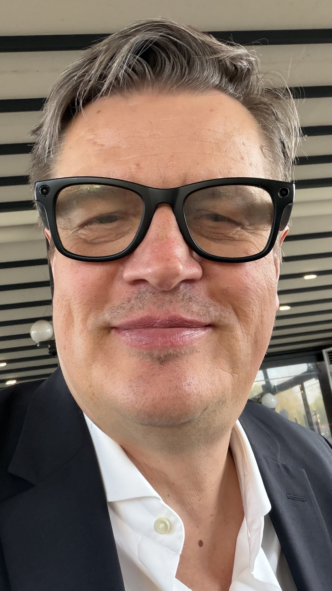

„Kannst du diesen Absatz straffen?
Der C-Band-Sucher nutzt ein 3-achsig gimball-stabilisiertes Array, EMI-geschirmt nach MIL-STD-461G CE102, mit einer schaltenden ZF-Stufe bei 1,42 GHz — das Team möchte ein knapperes Aktiv. Danke.“
Der Wächter, den wir aus dem Exil zurückgeholt haben.
The watcher we brought back from exile.
Ihre Leute wollen die beste KI nutzen. Claude, GPT-5, Gemini, was im nächsten Quartal am besten ist. Azael lässt sie das tun, sicher. Er liest jeden Prompt, entfernt sensible Inhalte (anonymisiert Namen, ersetzt Projekt-Codes, redigiert regulierte Identifier) und leitet eine konforme Version an das Modell weiter. Ihre Leute behalten die Frontier. Sie behalten Ihr geistiges Eigentum.
Your people want to use the best AI. Claude, GPT-5, Gemini, whichever is best next quarter. Azael lets them, safely. He reads every prompt, edits out the sensitive content (anonymizes names, substitutes project codes, redacts regulated identifiers), and forwards a compliant version to the model. Your people keep the frontier. You keep your intellectual property.
Souveräne KI-Plattformen verkaufen Ihnen ihr LLM. Azael lässt Ihre Leute das jeweils beste LLM nutzen.
Sovereign-AI platforms sell you their model. Azael lets your people use whoever's LLM is best.
„Azael war ein Wächter, der zu viel sah. Wir haben ihn zurückgeholt — denn nur einer, der die Schatten kennt, kann sie aufhalten.“
"Azael was a Watcher who saw too much. We brought him back — because only one who knows the shadows can stop them."
Er öffnet ChatGPT. Er fügt elf Zeilen aus der Spezifikation ein. Er drückt Enter. Das Modell formuliert den Absatz um und liefert ihn zurück. Er bedankt sich.
He opens ChatGPT. He pastes eleven lines from the spec. He hits return. The model reformulates the paragraph and ships it back. He thanks it.
In derselben Stunde haben das Band, der Standard und die ZF das Land bereits verlassen. Die Trainingsdaten des Wettbewerbers werden nächstes Quartal aktualisiert.
Across town, the band, the standard, and the IF have already left the country. The competitor's training data updates next quarter.
Der Kanal ist derselbe KI-Client, den Ihre Leute ohnehin nutzen — ChatGPT, Claude, Cursor, Copilot Chat. Sobald der Trigger erscheint, fängt Azael den Prompt ab, statt ihn weiterzureichen, und antwortet direkt — formatiert wie vom Modell. Keine neue App, kein Popup, kein separates Dashboard.
The channel is the same any-AI-client your people already use — ChatGPT, Claude, Cursor, Copilot Chat. When the trigger appears, Azael intercepts the prompt instead of forwarding it and answers directly, formatted as if from the model. No new app, no popup, no separate dashboard.
@Azael: <Ihre Frage>
@Azael: <your question>
Der Wächter berichtet. Der Mensch entscheidet. Keine Schweregrade. Keine Auto-Remediation. Keine fröhlichen Häkchen.
The watcher reports. The human decides. No severity scores. No auto-remediation. No cheerful checkmarks.
Er schreibt ihn selbst, in der Sprache des Hauses — Deutsch für einen Mönchengladbacher Pharma-Vorstand, Englisch für einen Tier-1-Prime, und er setzt den Manager nie ins CC, wenn nicht ausdrücklich verlangt.
He writes it himself, in the language of the house — German for a Mönchengladbach Pharma board, English for a Tier-1 prime, and he never copies the manager unless asked.
DAS IST DAS ARTEFAKT, DAS DEN 500K € DEAL SCHLIESST.
DER BRIEF IST DAS PRODUKT.
THIS IS THE ARTIFACT THAT CLOSES THE 500K € DEAL.
THE LETTER IS THE PRODUCT.
im Berichtszeitraum 04.–10. März haben 243 Mitarbeiter insgesamt 4.812 Prompts an öffentliche Sprachmodelle übergeben. Verteilung nach Risikoeinstufung:
In the reporting period of March 4–10, 243 employees submitted a total of 4,812 prompts to public language models. Distribution by risk classification:
| Einstufung | Prompts | MA | Maßnahme |
|---|---|---|---|
| Hoch | 1 | 1 | redigiert, eskaliert |
| Mittel | 2 | 2 | redigiert, dokumentiert |
| Gering | 17 | 14 | redigiert |
| Unbedenklich | 4.792 | 238 | passieren gelassen |
| Gesamt | 4.812 | 243 |
| Classification | Prompts | Staff | Action |
|---|---|---|---|
| High | 1 | 1 | redacted, escalated |
| Medium | 2 | 2 | redacted, documented |
| Low | 17 | 14 | redacted |
| Cleared | 4,792 | 238 | passed through |
| Total | 4,812 | 243 |
Ein Vorfall erfordert Ihre Entscheidung:
One incident requires your decision:
Schulungspfad oder Meldung an die Linie? — Ich bitte um Weisung.
Training path or report to the line? — Awaiting your direction.
Ich sehe, was den Mauern entgleitet. Ich nehme es heraus, leise, bevor es das Tor erreicht. Ich erzähle es dir, am Montag, und niemandem sonst.
I see what slips through the walls. I take it out, quietly, before it reaches the gate. I tell you, on Monday, and no one else.
Hardening-Details, MIL-STD-Referenzen, Lieferantengraphen. Fremdstaaten-Akteur als Baseline.
Hardening details, MIL-STD references, supplier graphs. Foreign-state-actor model is the baseline.
Molekülstrukturen, GxP-geschützte Protokolle, FTO-Patentstrategie.
Molecule structures, GxP-protected protocols, FTO patent strategy.
Prozessknoten-Parameter, Masken-Designs, Fab-Rezepte. Die meistüberwachte Branche der Welt.
Process node parameters, mask designs, fab recipes. The most surveilled industry on earth.
Klinische Studiendaten, Kandidatensequenzen, CRO-Kommunikation. GxP und IP, beides in einem Strom.
Clinical trial data, candidate sequences, CRO communications. GxP and IP, both in one stream.
Lieferanten-IP, Prozess-Rezepte, Mittelstands-Patente. Die deutschen Hidden Champions.
Supplier-IP, process recipes, Mittelstand patents. The German hidden champions.
Betrugsmodelle, Trading-Algorithmen, KYC-Profile, BaFin-regulierte Transaktionsdaten.
Fraud-detection models, trading algorithms, KYC profiles, BaFin-regulated transaction data.
Er sieht alles. Er erzählt nur dir.
He sees everything. He tells only you.
